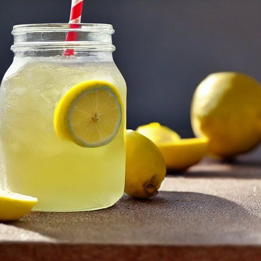

Citronade
Ingrédients
-
4 citrons

-
4 c. à soupe de sucre
-
1 1/2 L d'eau
Instructions
Presser 4 citrons.
Dissoudre 4 c. à soupe de sucre dans le concentré de citron en mélangeant.
Ajouter 1 1/2 L d'eau et servir.